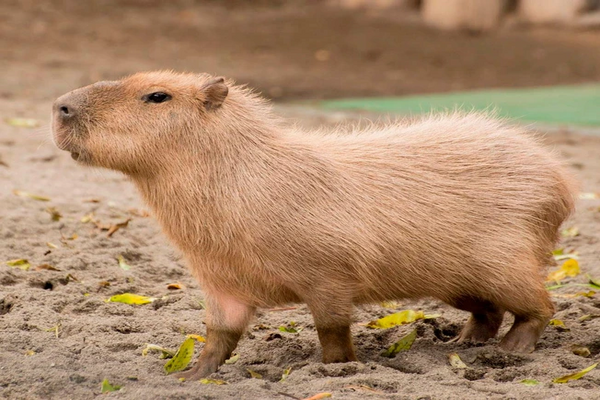

Капибары — это самые крупные грызуны на планете, родом из Южной Америки. Они известны своей дружелюбной натурой и необычным образом жизни. Эти животные могут достигать до 1,3 метра в длину и весить до 65 кг. Их жизнь тесно связана с водоемами, где они проводят большую часть времени.
Капибары обладают плотным телосложением, их тело покрыто короткой и жесткой шерстью, что помогает им оставаться сухими, когда они выходят на берег. У них большие лапы, что делает их отличными пловцами.
Капибара на берегу водоема.
Капибары — травоядные животные, которые питаются преимущественно растениями, такими как трава, водные растения и корни. Они также могут поедать фрукты и кору деревьев, но основную часть рациона составляют зеленые растения.
Капибары живут в больших группах, которые могут насчитывать до 100 особей. В группе обычно есть доминирующий самец, несколько самок и их потомство. Они очень социальные животные и часто общаются друг с другом с помощью различных звуков.
Капибары играют важную роль в экосистемах водоемов. Они помогают поддерживать баланс, поедая избыточную растительность и создавая пространство для других видов. Также капибары являются важным источником пищи для многих хищников.